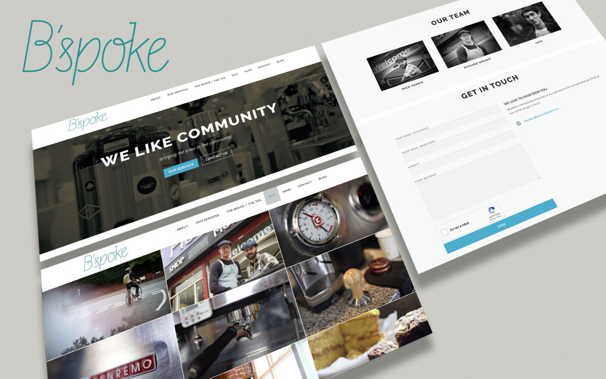
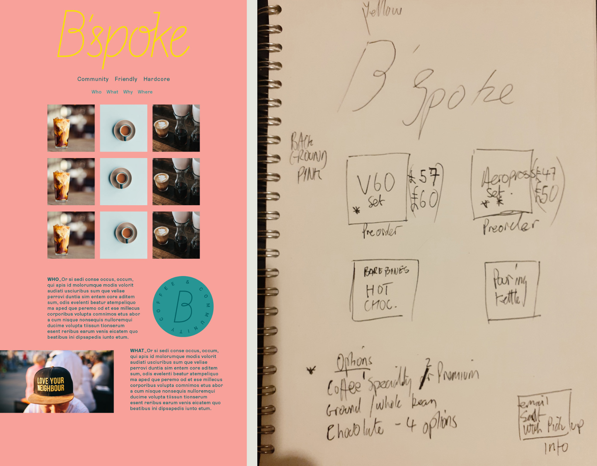
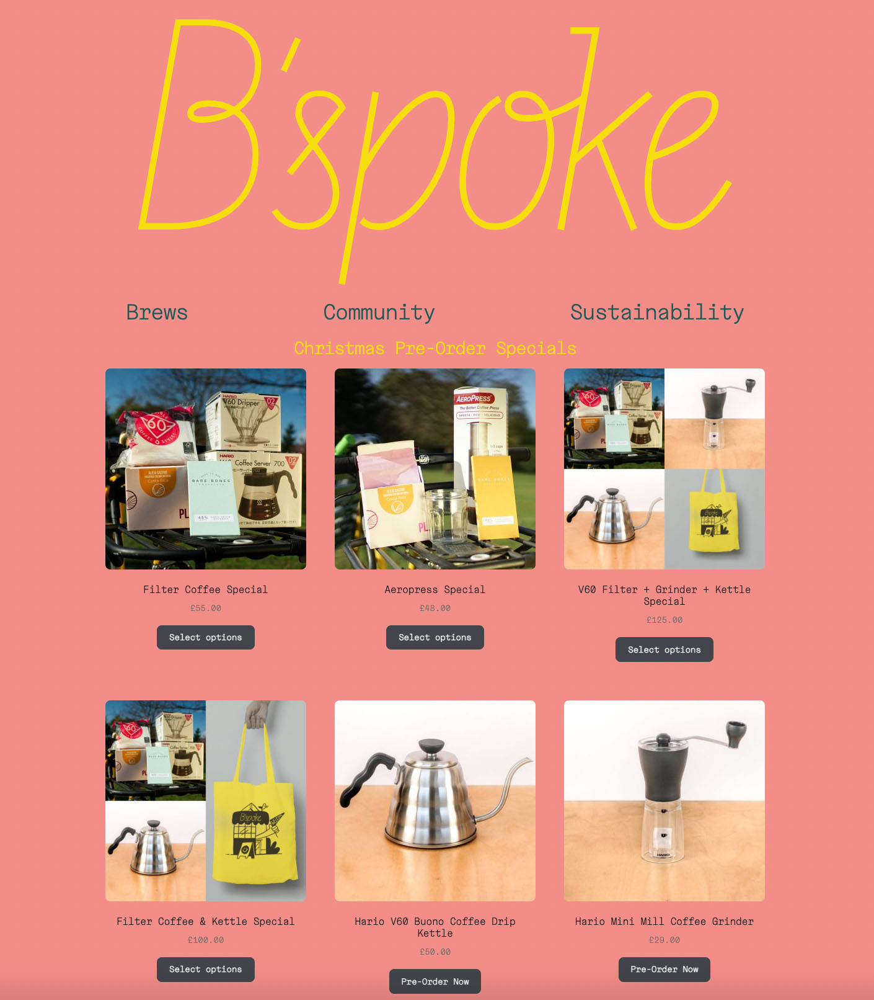
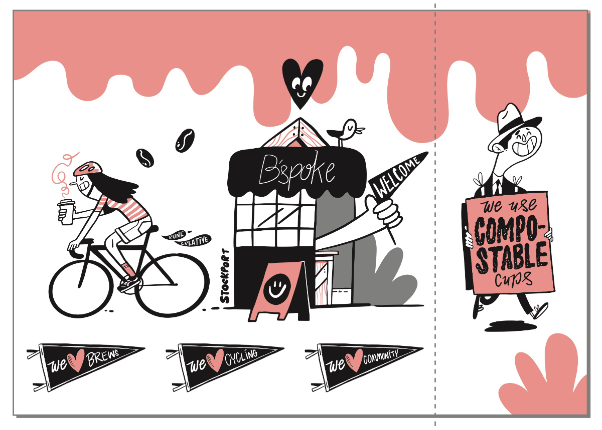
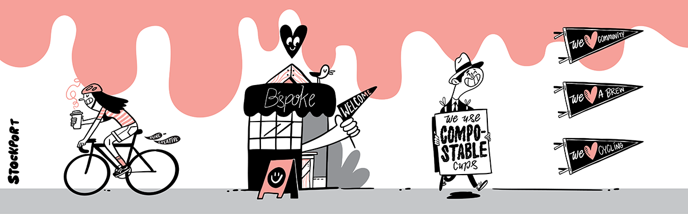
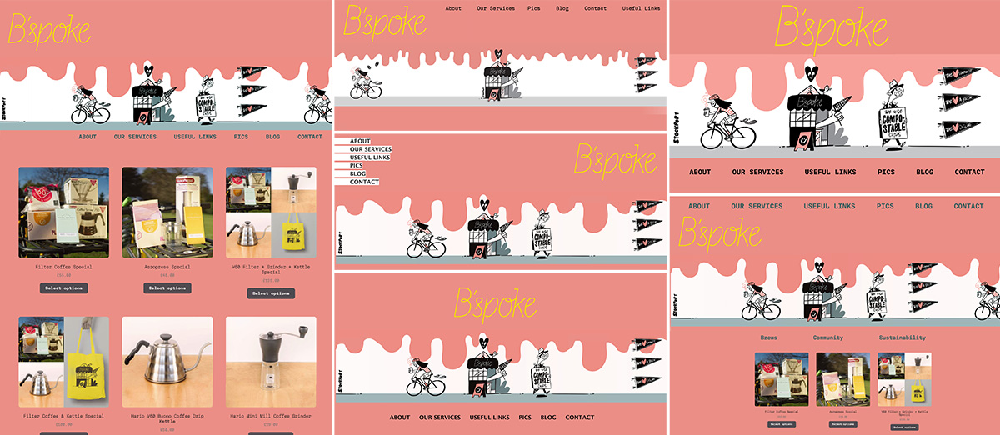
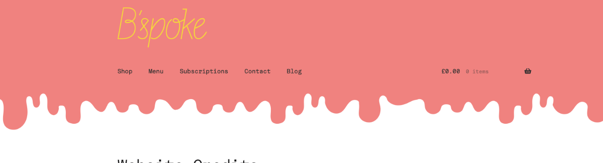
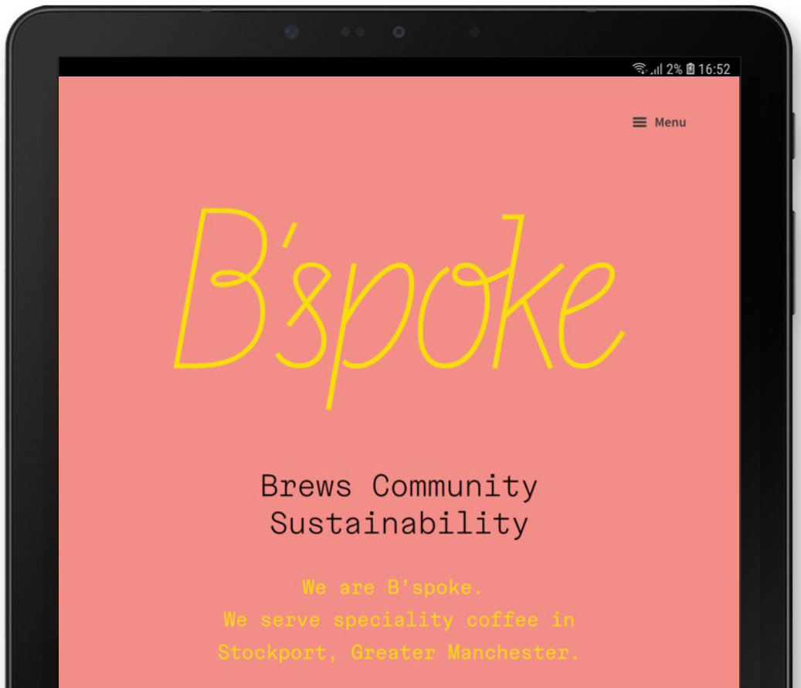
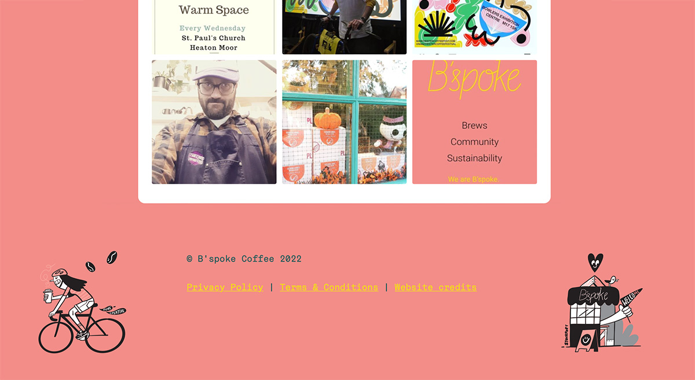

Ben Bayliss
Website Design
As a dedicated web designer, I have spent years refining my skills in creating visually captivating websites. My expertise lies in design, complemented by a working knowledge of coding, which allows me to bring my designs to life.
Throughout my web design career, I have had the opportunity to work on various exciting projects. One notable example is my work with B'Spoke Coffee, where I successfully developed an e-commerce site, overseeing the design and implementation process.
B'Spoke Coffee Redesign 2022
Three Unique Websites, One Designer
B'Spoke Coffee's digital journey underwent three distinct phases, and I was at the helm of all three projects. The first iteration involved a cost-effective approach using an off-the-shelf free WordPress theme, which I tweaked and customized to establish a fully functional website and blogging platform for the new company.
Original site:

For the second special Christmas site, I drew inspiration from designer Adi Wright's new logo for B'spoke and rough concept to create a distinctive and engaging site using WooCommerce within WordPress. Although it was my first time building a WooCommerce site, the result was a resounding success.
Adi's Supplied concept below, along with a rough drawing from Nick at B'spoke

Here is how it turned out (screenshot so not showing header or footer)

The third site was a creative combination of the previous Christmas site, innovative design concepts from local artist Pip Claffay - https://www.rune-creative.co.uk, and my own contribution. The design drew inspiration from Pip's dripping graphic, which I transformed into a dynamic visual element. For a touch of fun and personality, I animated one of Pip's bicycle graphics using the GSAP javascript animation library, which reacts to users scrolling.
With WooCommerce as the backbone, I applied custom requests, such as free postage over £25 (excluding subscriptions) and offered lessons on how B'Spoke could update the website themselves. The end result was a clean and functional shop interface that showcases their products effectively.
B'Spoke Coffee love their website; you can check it out at bspokecoffeehouse.co.uk.
Pip's concepts.

Early mockups. All too busy.

Final simplified dripping graphic.

For the homepage I removed everything except the logo, and added a menu. Below is the tablet view.

I put some of Pip's original graphics in the footer of the desktop site (instagram feed shown above).
